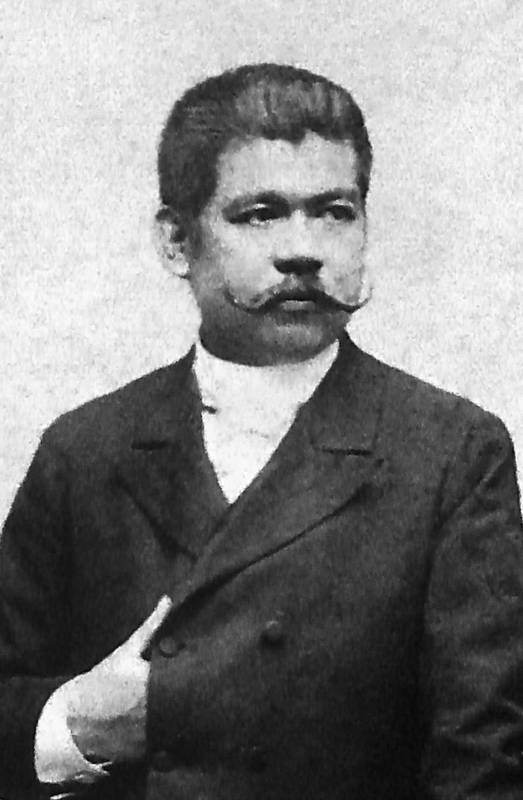

|
José Protacio Rizal Mercado y Alonso Realonda |
1861-1896 |
A Writer, nationalist, and a polymath who helped filipinos see the wrong doings of the spanish during that era. And the writer of the famous book "Noli Me Tangere". |
 |
Emilio Aguinaldo y Famy |
1869-1964 |
First ever president and the youngest president of the Philippines. he revolutionary, statesman, and military leader who battled for the Philippines independence against the spanish back then.
|
 |
Juan Luna de San Pedro y Novicio Ancheta |
1857-1899 |
A Filipino painter and activist during the Philippine revolution. He was one of the first recognized Filipino artist. And creator of one of the most famous painting, "Spoliarium".
|
|
Doña Marcela Mariño Agoncillo |
1859-1946 |
The maker of the first official Philippine Flag and known as the "Mother of the Philippine Flag".
|
|  |
Marcelo Hilario del Pilar y Gatmaitán |
1850-1896 |
He is also a known Filipino writer, lawyer, and journalist. He alongside with Jose Rizal and Graciano Lopez Jaena, Became leaders of the Reform Movement in Spain.
|